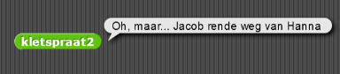
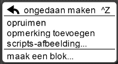
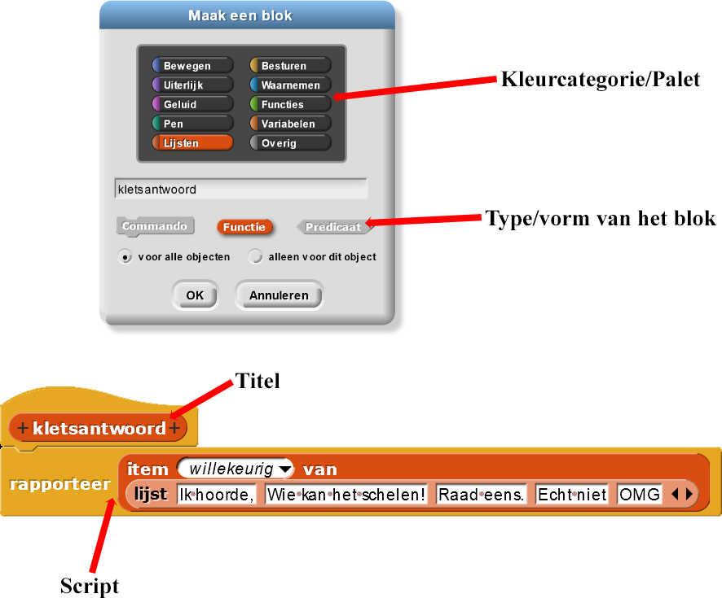
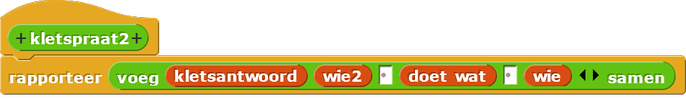
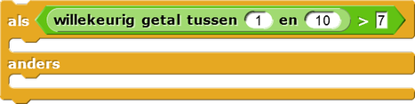

Je eigen blok maken
Op deze pagina, ga je een blok maken dat ervoor
zorgt
dat het programma wat meer op een gesprek lijkt. Dit ga je doen door zinnen als "Ik hoorde het," "Wat
maakt dat uit!" of "Hee, raad eens" toe te voegen, in plaats van altijd "Oh, maar."

- Open het H1L2-Kletspraat-project.
- Maak een blok. De instructies staan hieronder.
Een Nieuw Blok Maken
- 1 Klik op in het Variabelenpalet, of ctrl-klik (of met rechtermuisknop) op een lege plek in het werkblad en kies "maak een blok...". 
- Typ in de tekstbox de titel van je blok: kletsantwoord.
- Kies Lijsten, met de kleur rood.
- Selecteer de vorm [Opdracht, Functie/Rapporteer, Predicaat].
Kies voor dit blok de ovale rapporteer-vorm, want je wilt dat het blok een waarde (het antwoord) rapporteert naar een ander blok. Klik op ok. - Het blok is nu toegevoegd links onderaan je lijst van variabelen.
Blokbouw-beginselen
In Snap!, heeft elk blok een kleurcategorie, ook wel bekend als het palet. Grijs ("Overig") is de standaard. Een blok heeft een type (te herkennen aan de vorm van het blok), een naam, en een script dat het gedrag definieert.
Het script van het blok bouwen
- Sleep de blokken die je nodig hebt naar het vlak. Voor dit blok, gebruik je en .
- Klik de blokken aan elkaar. De structuur van de code lijkt op
wie,doet wat, enwie2. - Vul alle invoeren in.
- Klik op het pijltje naar beneden in
itemom voor dit project "1" te veranderen naar willekeurig. - Vul dan de
lijstmet zinnen.
- Klik op het pijltje naar beneden in
- Klik OK wanneer je tevreden bent.
Opmerking: Wiskundigen gebruiken het woord "functie" op een net andere manier dan
programmeurs. Maak je geen zorgen als je tijdens wiskunde iets anders hoort, dan wat je hier leest.
Let op. Blokken met een ovale vorm, zoals noemt Snap! een rapporteur. Dit wordt in veel programmeertalen een functie genoemd.
Blokken met de vorm van een puzzelstukje, zoals noemt Snap! een commando, maar worden in programmeertalen soms een procedure genoemd. Programmeertalen zijn hier niet heel consistent in. Sommigen noemen beide functie en anderen noemen beide procedure . (WEGLATEN: Ook gebruiken de meeste talen deze woorden alleen voor procedures of functies die jij schrijft, niet degene die al in de taal zelf zitten.)
Debugging
- Test je speciaal gemaakte
kletsantwoord-blok door er meerdere keren op te klikken. Het zou zich zoals dewie-,doet wat-, enwie2-blokken moeten gedragen. - Debug alle problemen voordat je verder gaat.
- Gebruik je nieuwe blok. Pas
kletspraat2aan, en voegkletsantwoordin op de plaats van de tekst "Oh, maar...."  - Test en debug
kletspraat2ook. - Test het hele programma door meerdere keren op script D te klikken en los alle bugs op die je tegenkomt.
Als je er niet uitkomt, bekijk dan opnieuw hoe je een blok moet aanpassen in Hoofdstuk 1 Les 2 Pagina 2: Aanpassen en Debuggen.
Deze paarse "Een Stapje Verder"-secties bevatten moeilijkere opgaven die niet
verplicht zijn voor deze les. Als je vroeg klaar bent met alle andere opdrachten op de pagina,
probeer dan eerst deze sectie door te werken voordat je naar de volgende pagina gaat.
- Bewerk
kletspraatenkletspraat2zodat soms dingen gezegd worden als "Hanna en Olivia" gebruikmakend van twee namen in de lijstenwieofwie2.- Je kunt code gebruiken zoals

om iets alleen soms te doen. Verander de 7 in een andere getal om de waarschijnlijkheid aan te passen. - Als je programma twee namen gebruikt, dan moet je werkwoord in het meervoud staan. Het is
immers "Hanna en Olivia lopen", niet "Hanna en Olivia" loopt". Je kunt daarom twee versies
maken van
doet watof je kunt een werkwoord datdoet watrapporteert en een paar regels gebruiken om het werkwoord zo in het meervoud te zetten. Een voorbeeld van zo'n regel zou kunnen zijn "Als het woord eindigt op k, voeg dan 'ken' toe aan het einde van het woord".
- Je kunt code gebruiken zoals